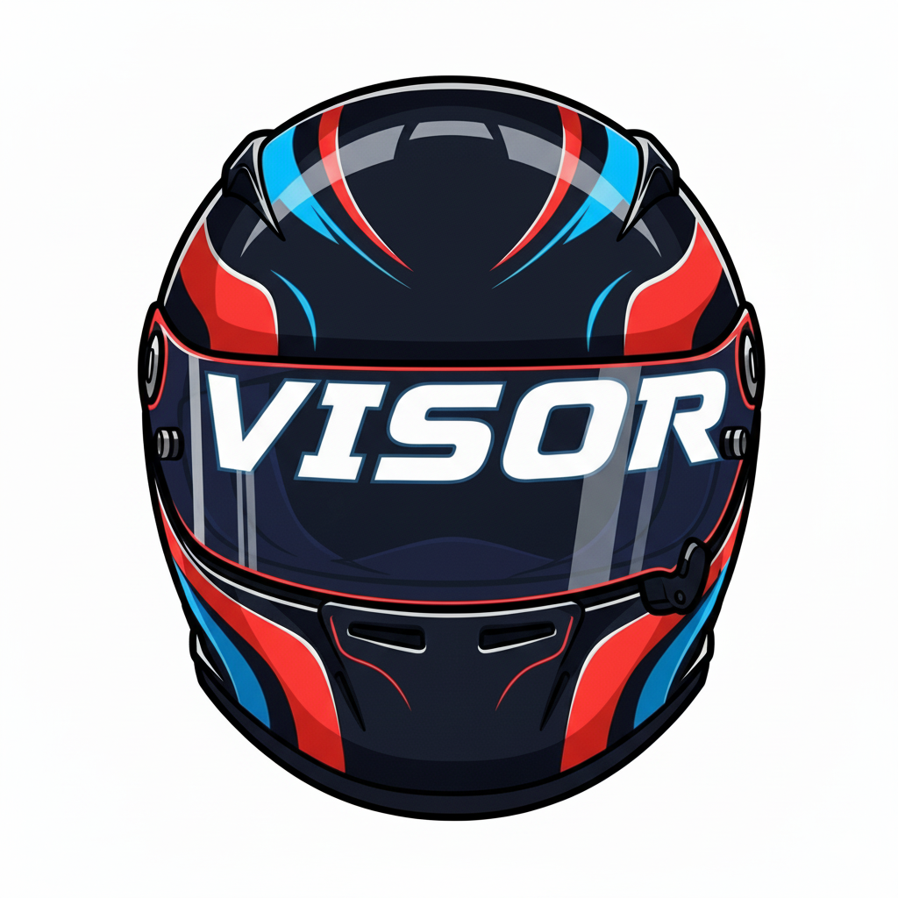

VISOR (Virtual Intelligence Simulator Overlay & Radar) is a real-time telemetry overlay for iRacing that includes only essential information such as position, fuel remaining, relative gaps, and a radar.
The Configuration Window lets you customize VISOR's display layout. Here you can toggle individual elements (Rows 0-5 and the Radar window) on or off based on what information you want visible during your race.
Choose from three size options that scale both the Main Window and Radar Window:
When the Configuration Window is open, both Main and Radar Windows display drag handles in the top-left corner. Click and drag to reposition. Positions save when you click "Done." To reopen the Configuration Window later, click ⚙ on the Main Window. You can close VISOR by clicking ✕ on the Main Window, or Exit VISOR in the Configuration Window.
Beyond the row toggles, the Configuration Window offers a few display preferences:
VISOR checks GitHub for a newer release on startup. If one is available, a small notice appears in the Configuration Window with a link to the download.
Gear Indicator: Displays current gear in a digital-style font for quick readability.
Shift Indicator: The gear symbol next to the number tells you when to upshift based on optimal physics:
VISOR starts with iRacing's provided shift point for the car, then continuously calibrates the fastest shift point for each gear from the physics from your own full-throttle acceleration. The learned shift point may be earlier or later than the car's lights, and can differ from gear to gear. VISOR's shift light calibration is saved on your PC for each car. When iRacing updates a car, VISOR restarts calibration. Learning pauses in the pits, on the pit limiter, off track, in replays, on a wet track, and while cornering.
The Calibration Dot at the bottom left of the gear symbol indicates VISOR's shift point learning status. Red means learning is in progress, green means the RPM value has settled. No dot means there's no shift point to show, which is true for neutral, reverse, or top gear, and when you haven't driven in the next gear up yet.
Position: Shows your race position. Class position is default, and you can select overall position in the Configuration Window. In practice and qualifying, this is based on fastest lap times, while in races it is your real-time track position.
Time/Laps Remaining: In timed sessions, shows time remaining (HH:MM:SS or MM:SS). In lap-limited sessions, shows laps remaining. Displays "Final Lap" on the white flag and "FINISHED" on the checkered flag. When a session is lap-limited and on a clock, a smaller session countdown appears beneath the lap count so you can see both the laps you have left and the time you have to set them.
Fuel Remaining: Estimates laps of fuel using a rolling 3-lap average of consumption. Updates after each lap: and most accurate after 3+ consistent laps.
Real-time visual comparison vs. your session best lap. The bar grows from the center: Right (green): faster, Left (red): slower, Center: matching pace. Range is ±3 seconds.
Last Lap: Your most recently completed lap time (M:SS.mmm). Best Lap: Your fastest valid lap this session (M:SS.mmm). Both values reset on a new session.
Shows 7 rows: 3 cars ahead, your car (yellow), and 3 behind. Gap times are calculated true time gaps between cars. Automatically hidden in Lone Qualifying sessions.
Visual Indicators: Yellow = you, White = same lap, Blue = lapped by you, Red = lapping you.
Pit Road: Cars on pit road display a "PIT" label and use gray proximity segments. An optional Hide cars in the pits setting (Configuration Window) removes pit-road cars from the table to reduce clutter, though you always see your own row, and pit-road cars reappear whenever you are on pit road yourself.
Position numbers: The position shown for each car follows the same Class / Overall choice as Row 0 (set in the Configuration Window).
Stationary Cars: Stopped vehicles on track display their physical distance in feet (capped at 999ft) in bold yellow text.
Proximity Bar: Features a dynamic 5-segment warning system that fills as cars get closer, scaling from an informational 8.0-second gap down to a critical 0.6-second gap.
Each field can be shown or hidden on its own in the Configuration Window.
Track Location: The name of the corner or section of the circuit you're currently in (e.g. "Eau Rouge," "Kemmel Straight,"). Names come from an editable catalog that covers 66 track layouts, including the Nordschleife, Le Mans, and most popular iRacing road courses. On a track the catalog doesn't recognize, the element hides. Enabling debug mode displays the lap completion percentage next to the track location, so location names and boundaries can be corrected or updated. Please email track location errors or updates to the developer!
Incident Counter: Session incidents (0x, 4x, etc.). The color tracks how close you are to the session's incident limit rather than a fixed count, so it means the same thing whether your limit is 4x or 25x: white below ~30% of the limit, yellow from there to ~60%, and red beyond ~60% (roughly one bad incident from a DQ). Unlimited sessions use a gentle informational scale.
Track Temperature: The current track-surface temperature, shown in °F or °C (your choice in the Configuration Window), with a small arrow to show the trend.
Top-down proximity view with 5 zones that populate and highlight in sync with spotter calls, up to 2 cars left and right. Your car is a green rectangle in center, while other cars are colored by class. The radar displays ~5 car lengths ahead/behind, automatically fades out when there are no cars in range, and back in when cars approach. The Radar Window can be toggled on/off in the Configuration window.
A car that disconnects for more than a few seconds is dropped from VISOR's running order, so every car behind it moves up a place. iRacing's official results keep a disconnected driver classified on the laps they completed, so your final position in the results might be a place or more worse than VISOR showed. Once the checkered flag is out, positions are held: a car that takes the flag and leaves the session keeps its place, so nobody moves up when drivers leave at the end.
For questions, bug reports, or feedback, email info@cephasmedia.com
License: Personal use only. See LICENSE.txt for full terms.